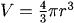
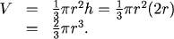
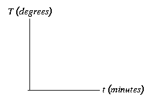

Setting up Functions from Descriptions
We are often given a description of a functional relationship between different variables and have to figure out what it means. This involves making the conversion between variables and the letters in the expression being described, constants and other letters, and determining how the relationship would be represented graphically.
Deciding What the Letters Stand for
When an expression contains a combination of letters and numbers some of the letters may represent constants and some may represent variables. For example, in the phrase \(f(x) = a sin(b x)\), the \(a\) and \(b\) are thought of as constants, the \(x\) is the variable, and \(f\) represents the functional operation itself. Often the letters at the beginning of the alphabet, \(a,b,c...\) stand for constants, those in the middle, \(f,g,h...\) for functions, and those at the end, \(...w,x,y,z\) for variables. However, in each specific case you will either be told which is which or be expected to decide from context.


Coefficients
The word coefficient describes a constant which multiplies a variable.

The Phrases "as a function of" and "in terms of"
Many problems begin by asking us to set up an equation which describes a relationship between two quantities. Some of these relationships are well known formulas, like the one relating the volume of a sphere to its radius (given in the example above). The formula above is a convenient form for finding V from r: r is the independent variable and V is the dependent variables. We say that the formula gives V as a function of r, or, that it gives V in terms of r. We could equally well have chosen to write an equation for the radius as a function of the volume, r(V), in which would mean having V as the independent variable and writing
We want



Setting up the Axes for Graphs
In addition to setting up a function, we often want to sketch its graph. We customarily use the horizontal axis for the independent variable and the vertical axis for the dependent variable.
